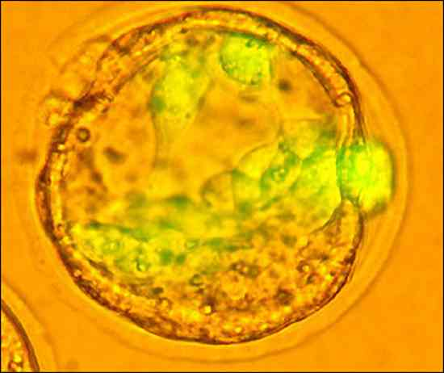
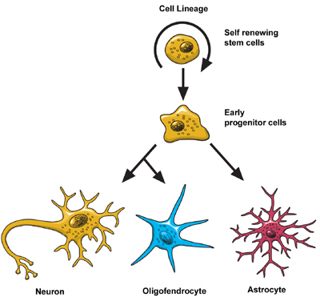

Genetic Engineering
- Genetics Introduction
- Genetic Basics
- Engineering Methods
- Human Cloning
- Eugenics
- Designer Babies
- Mapping The Genome
- Genetics and Religion
- Disease Elimination
- Longevity
- Capacity
- Adaptability
- Fashion
- Physical Attraction
- Stem Cells Revealed
- Stem Cells Controversy
- Human Rights
- The Genetic Brain
- Human Speciation
Genetic Engineering
Stem Cells
By the time you finish reading
this article quite a lot of the information
could well be out of date. The world of Stem
Cell research is fast changing and every day
there are new developments and new research
findings published.
What you read here is as an overview of what
is commonly held to be true as of May 2005,
a month in which
major
advancements in the field have been announced.
This month a team of scientists from Seoul National
University in South Korea led by Professor Woo
Suk Hwang published a paper about their latest
trails using human embryonic stem cells. The
team took skin cells from patients with specific
diseases, which they then transplanted into
donated eggs that had had their own genetic
material removed. The eggs where then grown
to an early stage at which time the stem cells
where removed and found to match the DNA of
the cell donor, making them 'pateint specific
stem cells'.
This announcement has caused huge ripples around
the world not least in the USA where President Bush immediately
reacted by proclaiming he would veto pending
legislation if it allowed for stem cell research
using embryonic stem cells. On May 23 2005 the legislation that concerned
Bush
was
approved by the House of Representatives.
But we are getting ahead of ourselves. First
lets look at some of the basics.
WHAT ARE STEMS CELLS?
There are a number of different kinds of
stem cells.
After sperm fertilises an egg a single celled
zygote is formed. This cell is a Totipotent
stem cell which means that it can become
any kind of human cell. This includes the cells
needed for the formation of the placenta, the
formation of the embryo and the development
of all other fetal tissue and organs. Totipotent
stem cells divide to make more totipotent stem
cells which can themselves become fetuses; which
is where identical twins come from.
4 days after the formation of the zygote the
totipotent stem cells stop dividing and begin
to form the Blastocyst. A Blastocyst
is a mass of cells consisting of three parts;
an outer layer of stem cells called the trophoblast
or trophectoderm, which form the cells of
the placenta and other tissue needed to support
the fetus, a hollow area and Inner Mass
stem cells which form the cells that
become the fetus. These stem cells are Pluripotent
meaning they can become almost any kind of cell.
Inner Mass stem cells are not totipotent because
they cannot make trophoblast cells but they
can make any other kind of human tissue cell.

The Pluripotent stem cells of the Inner mass then begin to specialize into Multipotent stem cells which can become different kinds of cell depending on their specialism, for example blood stem cells can become red or white blood cells or platelets. This process is known as stem cell differentiationMultipotent stem cells are also found in the formed human and are commonly known as Adult Stem Cells. Whereas the role of pre-birth multipotent stem cells is to form, build and develop the new human, the role of the adult stem cell is one of repair and renewal.
Adult stem cells are know to exist in a several areas of the bodies organs and tissues. Some of the earliest stem cells to be discovered, in the 1960's, were those in bone marrow. Bone marrow contains at least two types of stem cell, those for the formation of blood related cells and those for the formation of bone, cartilage, fat, and fibrous connective tissue.
The body is known to hold stocks of stem cells in various other places including; the brain, the skin, skeletal muscle and liver.
Until relatively recently it was thought that multipotent stem cells were only capable of differentiating into cells for use within their specialism. The stem cells multipotency had led scientist to believe that this meant that stem cells which live in a specific place could only differentiate into cells related to that organ or tissue, it seems that this may not be true. Recent experimentation suggests that certain adult stem cells may be pluripotent and capable of Transdifferentiation, the ability to differentiate into other cell types outside of their specialism. It has been shown that already differentiated cells can transdifferentiate and more particularly can be induced to transdifferentiate. Whilst some evidence seems to exist for transdifferentiation there is a big debate regarding how exactly it happens, some scientists have suggested that a process of fusion occurs that gives the appearance of transdifferentiation. At this time there is no accepted conclusive proof either way.
Finally stem cells are found in one other place, the umbilical cord. These stem cells are also multipotent and more specifically only make blood cells.
LIFE CYCLE OF A CELL:
While we bear in mind the debate about transdifferentiation
and the nature of adult stem cells, certain
aspects of stem cell morphology are held to
be true. This is a basic overview of these 'knows'.
From Stem to Death.
Stem cells sit around in the zygote, embryo,
fetus or the birthed human, dividing. The division
of stem cells into new stem cells is known as
self-renewal, the division of a stem cell into
a new, specialist cell is know as differentiation.
The stem cells are waiting for a signal to start
to differentiate. Differentiation is the process
of becoming a specialist cell.
The stem cell receives the signal telling it
to turn on certain genes and make the required
proteins. Part of this process is the continuing
division of the cell. The differentiation process
is complete once the cell stops dividing. It
is now a specialist cell. This cell then makes
its way to the required spot where it continues
to function until death. The point of death
varies from cell type to cell type
DIFFERENT KINDS OF STEM CELLS:
|
Type |
Behaviour |
Found In |
Early Embryonic |
Totipotent |
Zygote |
|
Blastocyst Embryonic |
Pluripotent |
Inner Mass of Blastocyst |
|
Fetal |
Pluripotent |
Fetus |
|
Umbilical Cord |
Multipotent |
Umbilical Cord |
Adult |
Multipotent |
Babies, Infants, Children, Adults |
Scientist mainly use
two types of stem cells, blastocyst embryonic
and adult which they obtain from either animals
or humans. In the main scientist steer clear
of using totipotent embryonic stem cells because
of the controversy caused by their use. A totipotent
stem cell has the total ability to become a
human, i.e. it cannot only make the tissue required
for human life but also the tissue necessary
for the placenta. As the embryo develops the
stem cells become less pluripotent so fetal
stem cells are less versatile. Umbilical cord
stem cells have so far only been found to hold
blood stem cells. Adult stem cells were thought
to have formed their specialism and therefore
only be able to produce cells that fit the specialism;
evidence is beginning to suggest that this may
not be so. And lets not forget the transdifferentiation
experimentation here.
The Variety of Life:
There are a lot of different kinds of cells
that go to make up the body. The different kinds
of cells have hugely differing life cycles.
Two examples:
Skin Cells
The Skin needs
Keratinocyte
cells for repair and renewal. The stem cells
recieve the signal to start to differentiate
into a Keratinocyte cell deep within the skin
layers. As it differentiates it moves towards
the surface of the skin.Before the cell reaches
the surface it loses it nucleus and dies. As
a dead cell on the outer layer its job is to
protect the living cells underneath until it
finally flakes off to become dust. As you can
see this process requires a lot of stem cells
to be available for differentiation as the skin
is continuously repairing and renewing itself.
Nerve Cells

Nerve cells come in two basic forms, Neurons and Glia. Neurons transmit information and are supported by the glia cells. They are mostly created during the embryonic and fetal stages ergo they are from embryonic or fetal stem cells. When a stem cell starts to differentiate for use within the nervous system it can do one of three things; it can self-renew, it can become an astrocyte, a type of glia cell, or it will produce neurons or oligodendrocytes. By the time we are born most of our neural stem cell activity has finished. As children we probably grow a few more neurons that are used to create neural circuits. The jury is still out on how much activity happens after birth, there is evidence to suggest that the brain can and does make new neural cells from adult stem cells. The death of a neural cell is infrequent and happens after a long and active life.WHY DO SCIENTISTS LIKE STEM CELLS?
Stem cells are some of the most interesting
cells in the human makeup. They possess three
key features that make them eminently useful
and fascinating for scientists.
1. Stem cells are cells that have yet to have
their specific role in the formation of tissue
determined.
2. Stem cells can become almost any other kind
of cell. They are waiting for a signal that
will tell them what kind of tissue cell to become.
3. Stem cells have the ability to divide - proliferate
over long periods of time.
The pluripotent nature of embryonic stem cells
- the ability to become almost any other kind
of cell makes it one of the favourites with
scientist. Also embryonic stem cells are more
easily grown in the laboratory and are generally
more abundant. But this is the stem cell that
causes most
controversy.
The argument is fundamentally about when human
life begins; at birth or at conception, and
the right to life. Using adult stem cells is
basically uncontroversial but at present adult
stem cells are seen as less versatile; they
are rarer and they proliferate less readily.
HOW ARE STEM CELLS GROWN?
Embryonic Stem Cells
Firstly the scientist needs to have a blastocyst
from which to extract the Inner Mass Stem Cells.
The Inner cell mass is then transferred into
a plastic dish that has been coated with, most
commonly, mouse embryonic skin cells and contains
a soup of nutrients and growth factors. These
initial stem cells divide over a period of a
few days to fill the dish. Once the dish is
full the stem cells are removed from the dish
and transferred into new dishes where they continue
to divide. This process is repeated for about
six months. After 6 months the initial batch
of 30 stem cells has become several million.
These cells are all still pluripotent. During
this six month process periodic tests are made
to ensure that the stem cells are still healthy,
genetically normal and have not started to differentiate.
If the batch passes all the test then it can
be called an embryonic stem cell line.
There is no accepted standard for these test
and scientist admit that the tests do not in
fact give a clear indication of the stem cell
lines fundamental properties and functions.
The scientists keep the stem cell lines from
spontaneously differentiating by controlling
the conditions under which the stem cells are
grown. When they need to start the differentiation
the conditions are changed. To produce a stem
cell line for the creation of specific types
of cell the scientist adjusts the chemical composition
of the culture or the surface medium or inserts
some specific genes. At present this process
is not that reliable.
Adult Stem Cells
Adult stem cells are already specialists, but
specialist waiting for their signal to start
to work - differentiate. There are some important
aspects of adult stem cells that need to be
borne in mind; they do not exist in large quantities
and they do not divide until they are activated
by disease or injury and are required for a
repair or renewal job.
The biggest challenge to scientist in the field
of adult stem cell research has been how exactly
to produce
enough adult stem cells to make it viable
as a therapeutic option. So far there has been
limited success in the field of stem cell proliferation
and control. A regular check on the
news
will show monthly if not weekly hopeful articles
describing 'promising'
new
discoveries.
WHAT DO SCIENTISTS WANT TO DO WITH STEM CELLS?
Disease Elimination and Cure
Most of the more lethal diseases such as cancer
are caused by faulty cell differentiation and
division, as are birth defects. If scientist
can understand, unravel and control the complex
processes of differentiation it will be a huge
step towards finding ways to eliminate and cure
such diseases, birth defects and genetic disorders.
Drug Testing
Rather than rely on animals for testing
new drugs and therapies scientist are attempting
to create stem cells line that can be used to
produce cells for testing drugs and therapies.
Cancer cell lines are already used to test anti-tumour
drugs. To be able to test drugs on different
kinds of tissue requires the scientist to be
able to produce consistent stem cell lines and
have them differentiate to exactly match so
that each drug type has 'level playing field'
for comparison.
Tissue and Organ Replacement and Renewal
Experimentation has shown that it may be
possible to use stem cells to create new cells
that can be used to repair damaged tissue or
even eventually to grow new organs. Some of
the injuries and diseases that scientists are
concentrating on are; Parkinson's and Alzheimer's
diseases, spinal cord injury, stroke, burns,
heart disease, diabetes, osteoarthritis, and
rheumatoid arthritis. The idea is that healthy
cells are generated in the laboratory and then
transplanted into the patient where they will
replace and renew the damaged tissue.
FUTURE HUMAN EVOLUTION
It is highly likely that stem cell research
will be a major player in the future. The possibilities
for the manipulation of the human form, making
the adjustments that might prove necessary,
are likely to be achieved using stem cell engineering.
Taking stem cells and manipulating them for
alternative cell production could hold possibilities
for changing organ or tissue function. Growing
genetically manipulated organs could also be
a possibility. Who knows what kind of new organ
might be feasible this way?.
ISSUES AND ETHICS
This article scratches only the very surface
of the subject of stem cell research. There
are many hurdles for the scientists to overcome
and many ethical issues to be debated and resolved.
These issues are discussed more fully in other
sections of this site.
If you would like more in depth information
on the subject of stem cells a good starting
point is the National
Institutes of Health (USA) stem cell site.
^ Top ^